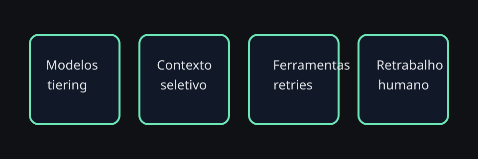

Custos previsíveis são parte da confiabilidade. Se o orçamento explode sem explicação, a operação perde credibilidade e tende a encolher.
Custos em produção e planejamento
Produção com agentes exige pensar orçamento como disciplina contínua, não como correção de emergência. Este capítulo organiza os principais baldes de custo e as alavancas mais práticas para mantê-los sob controle.
Diagrama — orçamento operacional

Custo precisa entrar cedo
Muita operação de agentes fica cara não por um único erro, mas por soma de pequenas ineficiências: contexto demais, retries demais, modelos fortes em tarefas simples e automações que rodam mais do que deveriam.
Quatro baldes de custo
Controles simples que já ajudam
- tiering de modelos por tarefa
- prompts mais curtos e instruções reutilizadas via skills
- caches e memória mais seletiva
- benchmarks regulares antes de mudar defaults
Checklist — revisão mensal de custo
- Revise quais tarefas usam o modelo mais caro.
- Separe tarefas críticas de tarefas rotineiras.
- Meça custo por resultado útil, não só por chamada.
- Documente hipóteses antes de trocar modelo ou contexto.
Modelo quantitativo mínimo: do custo bruto ao custo por tarefa útil
Sem uma conta simples, revisão financeira vira opinião. O ponto de partida mais útil é transformar a fatura em três números operacionais: custo por tarefa útil, custo por fluxo e percentual premium.
Exemplo numérico — baseline mensal enxuto
- Triagem interna: R$ 1.200 no mês para 8.000 pedidos úteis → R$ 0,15 por tarefa útil.
- Troubleshooting de engenharia: R$ 3.600 para 900 investigações úteis → R$ 4,00 por tarefa útil.
- Incidentes críticos: R$ 2.000 para 80 respostas úteis → R$ 25,00 por tarefa útil.
- Conclusão: o fluxo mais caro por tarefa não é necessariamente problema; o problema é quando ele cresce sem ganho correspondente de qualidade, velocidade ou redução de risco.
Quando economizar e quando não
Vale economizar
triagem, resumo, classificação, busca local, follow-ups simples.
Economize com cuidado
delegação, troubleshooting, escrita operacional e análise comparativa.
Não economize cedo demais
aprovações sensíveis, segurança, incidentes e tarefas onde erro custa caro.
Guardrails de orçamento e capacidade
Planejamento de custo fica muito mais útil quando vira política explícita. Em vez de reagir só quando a fatura assusta, defina faixas de ação antes.
Checklist — revisão semanal de FinOps para OpenClaw
- Compare custo por tarefa útil, não só total bruto.
- Separe gasto por tipo de fluxo: triagem, troubleshooting, escrita, incidentes, automação.
- Liste os 3 prompts ou workflows que mais cresceram em tokens.
- Marque o que pode voltar para tier mais barato e o que merece continuar premium.
- Atualize o baseline antes da próxima troca de modelo.
Portfólio de agentes por domínio: custo fica melhor quando a fronteira é explícita
Quando vários squads usam OpenClaw, a forma mais barata de escalar quase nunca é um agente único tentando atender tudo. O padrão mais previsível é montar um portfólio de agentes por domínio: um agente ou profile para suporte operacional, outro para desenvolvimento, outro para incidentes, outro para workflows internos sensíveis.
Esse desenho conversa diretamente com o capítulo 31: separar domínio reduz ruído editorial, diminui contexto carregado em cada turno e deixa mais claro quem paga, quem aprova e qual tier de modelo faz sentido para cada fluxo.
Checklist — desenhando múltiplos agentes por domínio sem explodir o orçamento
- Separe fluxos por consequência do erro, não só por organograma.
- Defina um tier de modelo padrão para cada domínio antes de abrir exceções.
- Escolha uma métrica simples por domínio: custo por tarefa útil, custo por incidente resolvido, custo por ticket triado.
- Evite memória compartilhada onde o contexto entre squads quase nunca se reaproveita.
- Documente quando um pedido deve trocar de agente em vez de crescer dentro do mesmo contexto.
Showback e chargeback por squad
Se o custo aparece apenas como fatura global, todo mundo acha o experimento razoável e ninguém enxerga o peso real do seu próprio uso. Por isso, operações maduras adotam pelo menos showback — visibilidade por squad, canal ou workflow. Chargeback só entra quando a organização já tem maturidade para tratar orçamento como contrato operacional.
Exemplo quantitativo — showback e chargeback na prática
Uma forma simples de começar é publicar um relatório mensal com três colunas por squad: volume útil, custo bruto e custo ajustado por retrabalho. Só depois disso vale discutir chargeback.
Com esses números, o showback já cria conversa melhor: engenharia não está gastando mais apenas por “abuso”, mas porque o retrabalho está alto. O passo de chargeback só faz sentido quando o squad já consegue agir sobre alavancas concretas — tier de modelo, contexto, tooling e approval gates.
Playbook — migrando de showback para chargeback sem distorcer incentivo
- Rode 1 a 2 meses de showback sem punição financeira.
- Marque quais custos são controláveis pelo squad e quais são compartilhados.
- Comece chargeback apenas no componente controlável.
- Mantenha incidentes e auditorias críticas como orçamento central ou fundo de exceção.
- Revise se o chargeback está reduzindo desperdício ou só empurrando uso crítico para fora do radar.
Modelo simples de governança financeira para OpenClaw
Você não precisa começar com FinOps sofisticado. Um modelo enxuto já resolve boa parte do caos:
1. Budget base por domínio
Cada domínio ganha um orçamento mensal esperado com faixa verde, amarela e vermelha.
2. Owner técnico
Alguém responde por tier de modelo, skills caras, memória e automações daquele fluxo.
3. Review quinzenal
Uma revisão curta olha crescimento, regressão de qualidade e desvios por squad.
4. Exceção explícita
Incidente, auditoria ou entrega crítica podem furar o budget — mas isso vira registro, não hábito invisível.
SLOs de custo por squad: o que medir de verdade
Assim como confiabilidade pede SLO, custo saudável também pede limites operacionais. A diferença é que aqui o objetivo não é gastar o mínimo possível, e sim manter previsibilidade com qualidade aceitável.
Playbook — review quinzenal de custo com squads
- Abra a visão por squad, canal e tipo de workflow.
- Marque o que cresceu por volume e o que cresceu por ineficiência.
- Confirme se houve mudança de modelo, prompt, skill ou política de memória.
- Compare o aumento de custo com qualidade percebida e retrabalho humano.
- Decida uma ação concreta: manter, reduzir tier, mover fluxo para outro agente ou exigir approval.
Guardrails de custo por fluxo
Budget mensal por squad ajuda, mas o controle fica mais útil quando cada fluxo crítico tem uma cerca operacional própria. Assim você evita que uma única automação, incidente ou experimento consuma o orçamento inteiro do domínio.
Cenários de revisão mensal em produção
Revisão mensal boa não olha apenas o total da fatura. Ela compara desvio, motivo e consequência. Abaixo estão três cenários típicos de produção.
Cenário 1 — custo subiu com volume saudável
Os tickets triados dobraram, o custo total subiu 55% e o custo por tarefa útil caiu. A leitura correta é capacidade melhor, não problema financeiro.
Cenário 2 — custo subiu sem ganho claro
O squad de engenharia passou a usar mais modelo premium, mas a taxa de retrabalho continuou igual. Aqui a revisão pede rollback de tier ou redesenho do fluxo.
Cenário 3 — custo caiu e a operação piorou
O dashboard parece bonito, mas o tempo humano de revisão explodiu. Isso indica economia falsa e justifica restaurar qualidade em pontos específicos.
Roteiro — reunião mensal de FinOps em 30 minutos
- Abra custo por squad, por fluxo e por tipo de modelo.
- Compare com o baseline do mês anterior e destaque desvios acima de 15%.
- Para cada desvio, classifique: volume, regressão de prompt, mudança de modelo, novo workflow ou incidente.
- Escolha apenas 1 a 3 ações para o próximo ciclo, com owner e data de revisão.
- Registre exceções deliberadas para que o próximo mês não trate gasto planejado como surpresa.